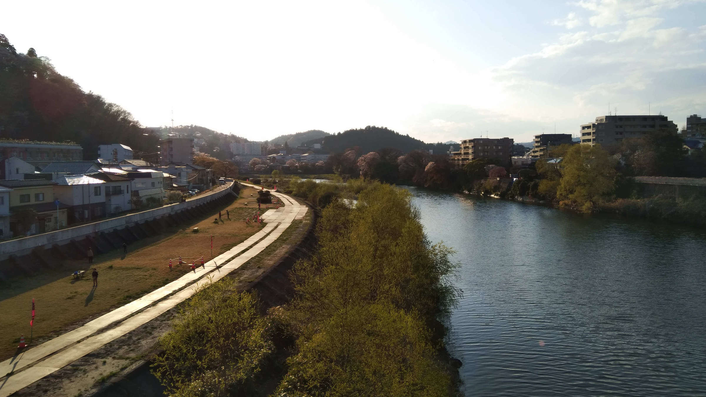
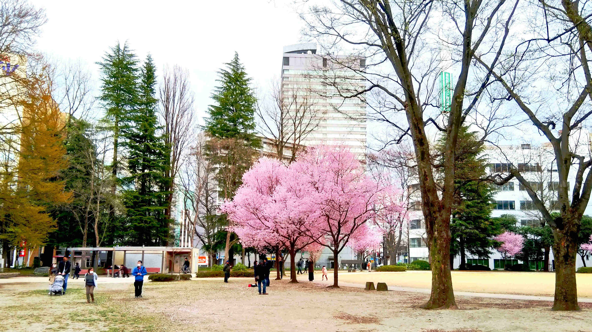
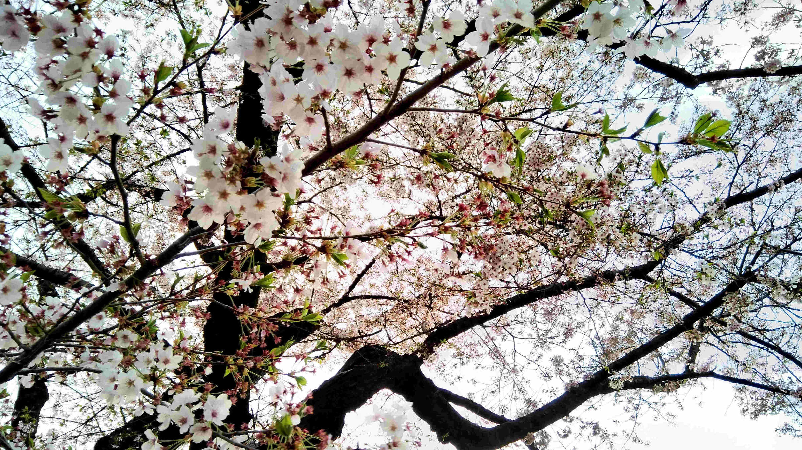
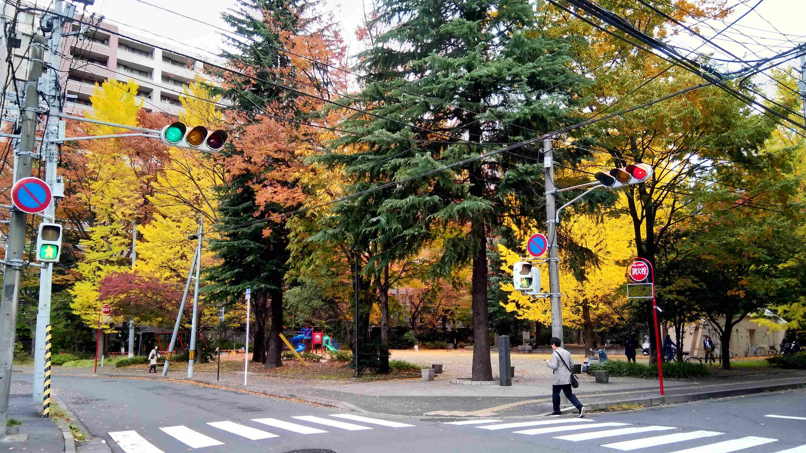
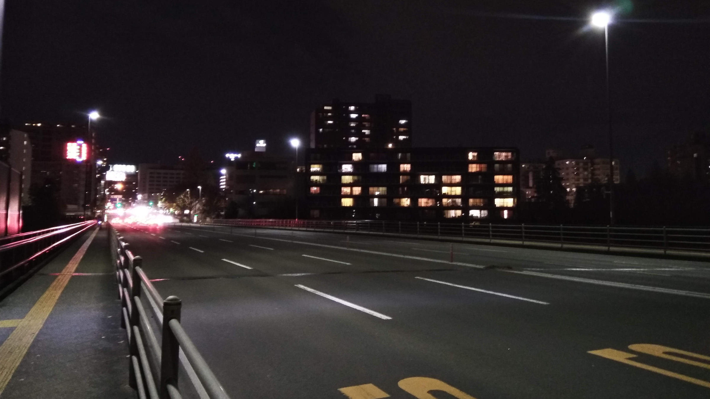
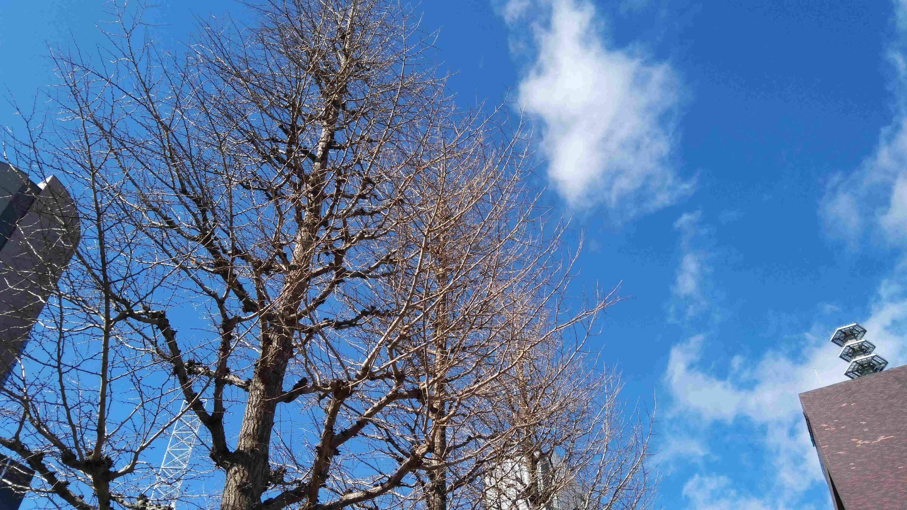
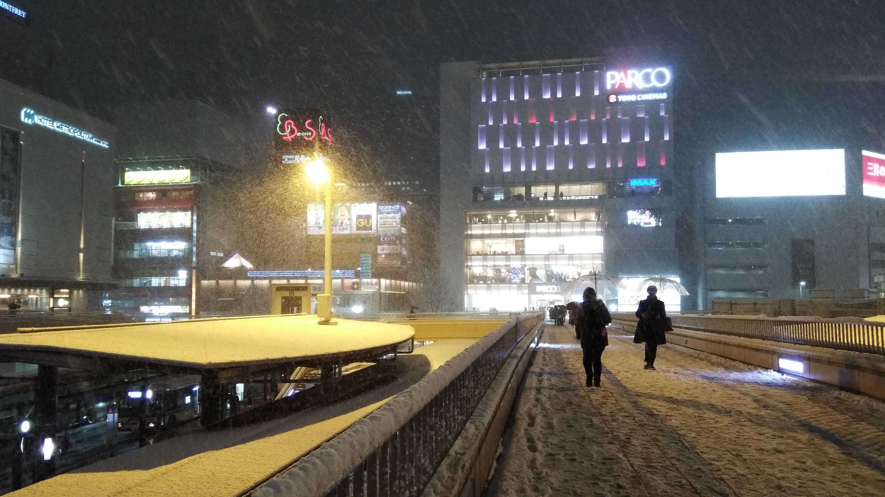
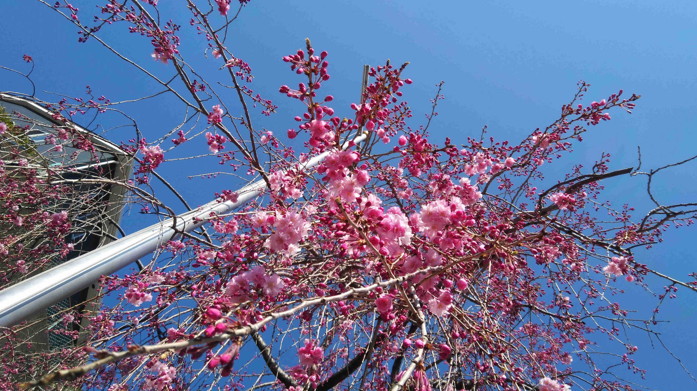

NEXT→
Age Factory
ONE MAN “Pure Blue” Release TOUR 仙台公演
2022年2月19日（SAT）OPEN 17:30 / START 18:00 @仙台Rensa
土曜日のライブですが、
イープラスの発売ページを見ると、一般発売は2月17日（木）の18:00までだそうです。
明日です！！お買い忘れなく！
詳細は公式サイトをチェック！
以前、Age Factoryの紹介記事を書いてみました。
新しい人の時代、僕らはどうしたい？Age Factory
↑ご参考になれば嬉しいです！
そして「あ、このバンドいいかも」と思ったらぜひライブ見に行ってください！
百倍以上にカッコいいです！！
2021年11月発売の「Pure Blue」に、個人的におすすめ曲は：
1) Pure Blue
2) Feel like shit today
3) Blink
(nanhé)
#JP #ライブ情報（仙台）
Posted: 2022-02-16 17:11:05
Last Updated: 2022-02-16 17:13:44